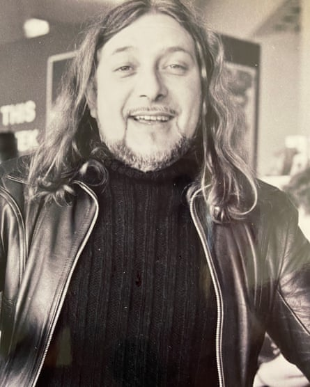

Peter James, who has died aged 84, was once described as the best artistic director the National Theatre never had.
His career covered such innovative and long-lasting projects as the Liverpool Everyman (1964-70), the Young Vic (1971-73) and two consolidating, long stints as the second artistic director at both the controversial open-stage Sheffield Crucible (1974-81) and the recreated, refurbished Lyric, Hammersmith (1981-94).
As a director James was equally at home with new plays and musicals – directing the UK premieres of Chicago and The Wiz (the all-black rock version of The Wizard of Oz) in Sheffield. In 1994 he made a drastic career swerve to become principal of Lamda – the London Academy of Music and Dramatic Art – and led a complete overhaul of the school’s new home, which he identified and purchased, in the former Royal Ballet School buildings on Talgarth Road; there, he re-established its top dog status alongside Rada.
Peter James at the Sheffield Crucible where he brought in the lucrative World Snooker Championship in 1977, and, he said, had the happiest time of his life.Photograph: Ed Yardley
A killer commercial theatre success evaded him, but his style was that of a quietly effective enabler: of students, actors, organisations and fellow artists. Right at the start of his Lyric phase, he put on David Hare ’s important revival of Christopher Hampton’s Total Eclipse (with Hilton McRae as Rimbaud and Simon Callow as Verlaine) to an acclaim long overdue since its 1968 premiere.
And in Sheffield he channelled his sporting enthusiasms – which included boxing and soccer (he was a lifelong Arsenal fan) – into pitching for, and landing, in 1977, the long-term residency of the money-spinning World Snooker Championship, which put the Crucible on the global map and reinforced its local and national profile.
Modest, quietly spoken and loved by colleagues and peers alike, James sported a piratical/rock star “look” with long hair and ponytail, wide-brimmed hats, and a rare ability to roll a liquorice-papered ciggie in one hand while writing notes with the other.
When invited to direct the Israeli premiere of Hair in Tel Aviv in the early 1970s, he suggested breaking the ice on the first day of rehearsals by starting with the all-nude scene at the end of the first act. He then stripped off, the actors and stage management followed (birthday) suit and the ice was not only broken but completely dissolved.
Born in Enfield, north London, Peter was the son of Gladys (nee King) and Arthur James, who worked in the Enfield gun factory. He was educated at Albany secondary modern (now comprehensive), then joined the sixth form at Enfield grammar school, progressing to Birmingham University to study English and philosophy before spending 39 weeks in rep as actor and dogsbody at the Intimate, Palmer’s Green, his near-local theatre.
He entered the “national” world of theatre by taking a certificate in drama at Bristol University and, in 1964, launched the Liverpool Everyman in a former Methodist chapel on Hope Street, with Terry Hands , future RSC director, and Martin Jenkins, future BBC radio drama producer.
He directed more than 30 productions there as sole artistic director (1967-70). He invited Liverpool into the theatre, commissioning the poet Roger McGough and his band the Scaffold, and directing a documentary about the building of the new Roman Catholic cathedral at the end of the road. This set the tone for the following eras of the director Alan Dossor and the playwright Willy Russell, and indeed all managements since.
At the Young Vic, working with the artistic director Frank Dunlop, he directed Beckett ( Denise Coffey in Happy Days), Pinter, Shakespeare, O’Casey and a season of Ted Hughes .
Simon Callow as Verlaine in David Hare’s production of Total Eclipse by Christopher Hampton at the Lyric, Hammersmith in 1981.Photograph: Donald Cooper/Alamy
The happiest time of his life, he said, was in Sheffield – he gave Alan Rickman his first leading roles, notably as a distraught pop concert sponsor in Stephen Poliakoff’s The Summer Party (1980), with Brian Cox and Hayley Mills; and as Jaques in As You Like It with Ruby Wax (1977). James also brought on the comedian and cabaret performer Victoria Wood as writer and the film director David Leland . He himself directed a controversial play by Keith Dewhurst about Northern Ireland, The Bomb in Brewery Street (1975).
The Guardian critic and New Statesman writer Paul Allen, who was from Sheffield, claims that James made him a better critic and, later, a better playwright (he wrote the stage version of the movie Brassed Off in 1998 and several plays with Rony Robinson), and he ended up chairing the board. James’s Sheffield “posse”, who remained close, included Allen, the designer Roger Glossop, Glossop’s wife, the stage manager Charlotte Scott, his secretary Lou Cooper and the press officer Jen Coldwell.
At the Lyric, he confessed that he “never quite knew who I was talking to”. All the same, he directed fine new plays by Poliakoff and Neil Simon , the venerable farce Charley’s Aunt starring a brilliant Griff Rhys-Jones, and two musicals by Charles Strouse – an operatic Nightingale (1982) starring Sarah Brightman, and the weirdly eccentric Lyle the Crocodile (1987) – for which Strouse wrote music, book and lyrics – based on Bernard Waber’s 1962 book The House on East 88th Street.
He called in his impressive international contacts to bring two great directors to the Lyric: Yuri Lyubimov with his version of Dostoevsky’s Crime and Punishment (1983) led by Michael Pennington , and the actor Núria Espert with a beautiful production of Lorca’s The House of Bernarda Alba (1986) starring Joan Plowright and Glenda Jackson , which transferred to the West End.
At Lamda, James initiated courses based on the work of Mike Alfreds’ Shared Experience and Simon McBurney’s Complicité, and commissioned workshops with the playwright Mark Ravenhill and actor/director Di Trevis that led to new plays taken up by Nicholas Hytner at the National – Ravenhill’s gloriously rude Mother Clap’s Molly House and Pinter’s beautiful, unproduced screenplay of Proust’s Remembrance of Things Past (both in 2000).
He left Lamda in 2010 but was coaxed out of retirement to be head of the theatre-directing graduate course at Mountview Academy in Peckham, south London, in 2012, a post he relinquished only two or three years ago. His latest theatre productions included several shows for Glossop at the 260-seater Old Laundry in Bowness-on-Windermere.
In all, he was a dynamic, one-man motor and instigator for the last half century of British theatre and fully deserved being made CBE in 2011.
James was married to Anthea Olive, a costume designer at the Liverpool Everyman, from 1964 to 1972, when they divorced. He was then in a relationship for 10 years from 1975 with the Irish actor Bernadette McKenna before marrying Alexandra Paisley in 1998; they divorced in 2012.
He lived in Tottenham, north London, retiring finally to Truro, Cornwall, to be near his daughter, Emily, from his first marriage. Even there, in failing health, he contacted the Hall for Cornwall to enquire as to how he might advise and encourage young people entering the theatre.
He is survived by Emily, by Leo, his son with McKenna, by four grandchildren, Felix, Jessica, Olivia and Lila, and by a younger sister, Margaret.